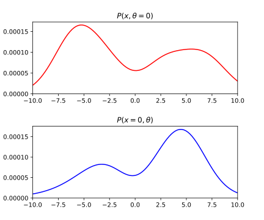

Joint, marginal and conditional densities visualized
December 11, 2017
Joint, marginal and conditional probabilities visualized
Being a visual type of person (if that’s actually a thing), I like thinking about concepts visually. It’s not rare to have many interpretations of the same concepts and each one of us chooses a mental model that suits the best our ways of learn new things.
A mental model is an explanation of someone’s thought process about how something works in the real world. -Wikipedia (well known guy)
Mental models also involves linking and viewing the same ideas from various perspectives. Taking the time to consolidate our own mental processes can help us in our daily lives by decreasing the cognitive charge needed for regular tasks in order to focus on harder ones. I remember struggling to get my visual mental models right about probability densities at first. While this is not typically the way it is taught, I find it easier to understand and play with probability mechanics by visual means (at least for low dimensions). I share here a graphical approach for theses concepts :
- Joint probability density :
- Marginal density :
- Conditional density :
- Likelihood :
Warning : this is not supposed to be a rigorous approach by any means, just intermediates mental models that could help some of you gaining intuitions about the formulas.
Joint probability density
Joint density describe co-occurrence of events. In terms of continuous densities they are often noted as follow :

That is the density describing the joint probability of random variables and . For the random variables and , the bivariate joint density can be represented as a surface (see above figure). Integrating a joint density on the whole domains of definition of its variables equals one.
We can fix any of the random variables and see the behavior of the other variables by slicing the joint density (red and blue lines). Note that and are not probability densities as they don’t integrate to 1.

The whole shape of the curve is nonetheless interesting as we will see in conditional densities part. If we were to integrate either of those curves it would give us the marginal probabilities of the parameters at the fixed value. For instance :
We saw here a glimpse of what actually are marginal probabilities which are developed in the next section.
Marginal density
A marginal density represents the probability density of a unique random variable.
When the marginal is not specified, we can (in simple cases) fully recover it from the joint density. As noted earlier, integrating a slice of joint density at a given point equals the marginal at the very same point. The whole marginal density can be computed in a similar fashion. By taking many slices over a parameter and calculating the corresponding integral we recover for each value the corresponding area value / marginal value.

On the above graph are drawn many which once integrated (marginalized) w.r.t equals . If we were to plot for infinitesimal values we would obtain , similar operation for :

Some properties appear obvious while reasoning geometrically :
- integrates to one as integrating over all the slices effectively integrates the whole joint density.
- doesn’t depend on any other variable, as they have been integrated into the marginal.
- Caution : computation seems straight forward geometrically but can actually be intractable analytically (and hard numerically too).
Conditional density
Conditional densities will appear here very straight-forward considering what we already saw. Remember the slices we were taking inside the joint density, they weren’t really densities as they didn’t integrated to one. One indirect way to approach things is to normalize this lasts slices by their areas and wonder what probability density it represents. They are without suspense conditional densities.

For example, consider the slice , in order to make it integrate to one we normalize this function by its area (which is also the marginal taken at slice point that is to say , we then obtain . This is obviously generalizable to all values. Moreover theses operation completely define conditional probabilities :
Notice how they have exactly the same shape as joint slices, the only difference being that they are normalized. By diving by the area (or the marginal of ) we are considering the density of given we have . We can wonder what looks like over all the different :

With a bit a training this type of result can become highly intuitive. All we did to obtain this surface (and not a real probability density as it does not integrates to one) from the joint is divide the whole joint density by the marginal of . I represented in orange on the graph so you can try yourself to understand how the marginal division affected the whole shape of the joint. Slicing this surface parallel to the axis represents the conditional density of given the slice point. But you may wonder what does represent a parallel to the axis into this surface ?
Appendix : Likelihood
The word likelihood is used in many contexts and often exchanged without precaution to mean probability. I will show you here how to visualize likelihood and how we can derive some properties of it. The previous surface we plotted represented the conditional density when considering fixed . We obtained it by dividing the joint density by the marginal of . Slicing along the axis for different values gives us many conditional probabilities given the chosen . Now if we were to consider cutting along the axis, what would we get ? It is not a density by construction since we only normalized along the axis. This slice represents the likelihood of given .

When considering visually, each slice direction represents respectively a conditional probability and a likelihood. The likelihood definition can be thought as two way to describe the same surface. For conditional probability we travel along the axis fixing the while for likelihood we travel along the axis fixing the .

A nice intuition you can take from this is that it is now obvious that likelihood is not a probability density (even if its confusing looking at the definition).
Conclusion
I hope you found this post interesting and that it gave you another viewing points about theses probability densities. Stay curious.